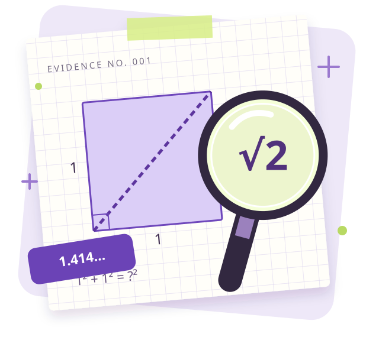

정사각형 전시판에
대각선 띠를 붙여라.
한 변의 길이가 1 m인 정사각형.
한 모서리에서 반대쪽 모서리까지 곧게 띠를 붙인다면, 길이는 얼마일까?
1² + 1² = □²
CASE 01. 끝나지 않는 숫자의 비밀
모양은 단순한데, 길이는 수상하다.
단서를 모아 무리수의 정체를 밝혀 보자!

정확한 길이와 근삿값, 무엇이 다를까?무리수를 구분하고, 정확한 길이를 나타낼 때 왜 필요한지 설명할 수 있다.
01 / 사건 접수
한 변의 길이가 1 m인 정사각형.
한 모서리에서 반대쪽 모서리까지 곧게 띠를 붙인다면, 길이는 얼마일까?
대각선은 1 m보다 길까? 2 m보다 짧을까?
피타고라스 정리를 쓰면 어떤 식이 나올까?
이 길이를 유한소수나 분수로 정확히 쓸 수 있을까?
✎ 활동지 1쪽 · ‘나의 첫 추측’에 기록해 보자.
02 / 단서 탐구
슬라이더를 움직여 보고, 두 수 사이로 수사 범위를 좁혀 보자.
아직 짧아요. 선택한 길이는 √2 m보다 작습니다.
작은 쪽의 제곱 < 2 < 큰 쪽의 제곱
→ √2는 그 두 양수 사이에 있어!
1.4 < √2 < 1.5 → 1.41 < √2 < 1.42 → 1.414 < √2 < 1.415
계산기 화면은 소수의 일부만 보여 줍니다. 이 실험은 근삿값을 찾는 활동이며, 무리수라는 사실을 증명하는 활동은 아닙니다.
03 / 개념 정리
무리수는 두 정수 a, b의 비 a/b (b ≠ 0)로 나타낼 수 없는 수야.
소수로 나타내면 순환하지 않는 무한소수가 돼.
두 정수의 비로 나타낼 수 있는 수
두 정수의 비로 나타낼 수 없는 수
두 종류를 합쳐 실수라고 해. 두 종류에 동시에 속하는 수는 없어.
오해 근호가 있으면 모두 무리수?
√4 = 2. 기호보다 실제 값을 확인해.
오해 끝없이 이어지는 소수는 모두 무리수?
0.333… = 1/3. 순환소수는 유리수야.
오해 √2는 1.414와 같다?
√2 ≈ 1.414. 가까운 값이지, 같은 값은 아니야.
04 / 분류 미션
먼저 활동지에 이유를 적고, 짝과 비교한 다음 정답을 확인해 봐.
✎ 활동지 2쪽 · 정확한 값 / 근삿값 / 두 표현의 쓰임
자르거나 주문할 때에는 반올림한 값만 믿기보다 필요한 여유 길이도 생각해 보세요.
05 / 출구 티켓
혼자 힘으로 3문항을 풀고, 오늘 찾은 단서를 한 문장으로 정리해 봐.
“무리수는 __________ 이고, __________ 할 때 유용하다.”
활동지에 적은 뒤 짝에게 설명해 보자.DETECTIVE TOOLKIT
A4로 출력해서 바로 사용하세요. 학생용 세트에는 정답이 포함되지 않습니다.
학생용 세트 = 개념 학습자료 2쪽 + 활동지 2쪽. PDF가 새 탭에 열리면 뷰어의 다운로드 버튼을 눌러 저장하세요.
TEACHER’S NOTES
2027학년도 이후 중학교 3학년용, 45분 한 차시입니다. 학교명 없이 공동 활용할 수 있도록 구성했습니다. 교사 화면 또는 모둠별 기기, 학생용 PDF 출력물, 필기도구를 준비하세요.
선수학습: 제곱근의 뜻, 피타고라스 정리, 유리수와 순환소수. 도입에서 이해를 확인하고 필요한 경우 짧게 복습합니다.
시간 배분: 사건 접수 5분 → 단서 탐구 12분 → 개념 정리 8분 → 분류·활용 15분 → 출구 티켓 5분.
진행 표시와 선택한 답은 이 브라우저에 저장됩니다. 공동 기기를 다음 모둠이 사용할 때에는 ‘처음부터’를 눌러 초기화하세요. 학생 답안을 서버로 전송하지 않습니다.
[9수01-08] 무리수의 개념을 이해하고, 무리수의 유용성을 인식할 수 있다.
교육부 고시 제2022-33호 [별책 8] 수학과 교육과정, 중학교 수와 연산. 교육과정 MCP의 공식 원문을 확인하여 구성했습니다. 교육과정은 중학교 1~3학년군으로 제시되며, 이 자료는 중3 수업용으로 설계했습니다.
NCIC 수학과 교육과정 원문 ↗ · 교육과정 적용 일정 ↗
공식 지도 근거: 교육부 고시 제2022-33호 [별책 3] 중학교 교육과정 186쪽은 생활 속 무리수의 필요성과 유용성, 실수의 구성을 다루며, 피타고라스 정리와 정사각형 대각선을 통한 직관적 도입 및 계산기 활용을 제시합니다.
이 자료의 지도 제안: 근삿값 탐구와 무리수의 증명을 구분합니다. 무한소수 전체를 무리수로 일반화하지 않도록 순환소수를 함께 비교합니다. 실수의 분류는 핵심 개념을 연결하는 수준으로 다룹니다.
수업 자료와 문항은 새로 구성했으며, 특정 출판사 교과서나 공식 지도서의 복제본이 아닙니다. 교사용 해설도 공개 자료이므로 시험 보안용으로 사용하지 마세요.